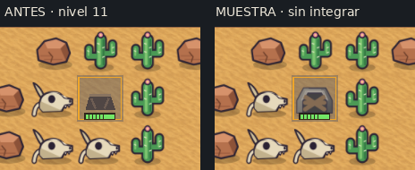
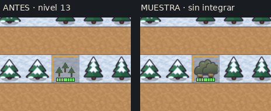
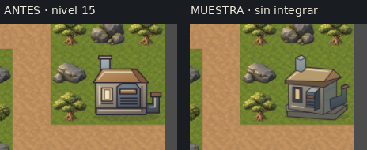
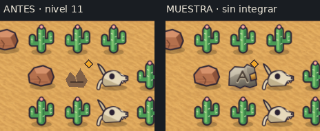
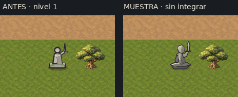

Capturas del juego real a 1280×720. Se conserva el suelo y la ubicación de cada pieza. Las muestras solo existen en la escena de revisión; la campaña sigue igual. Esta vista mantiene píxeles nativos: desplazá horizontalmente si no entra el mapa.
Informe completo · Lectura a 34 px por casilla · Enemigos a tamaño real
Mina, bosque y escombros prueban SVG ya existentes; no están conectados hoy. La estatua y la Central son bocetos nuevos de volumen, sin aprobación. Una elección puede combinar piezas o conservar el antes; no hace falta aprobar el grupo entero.




